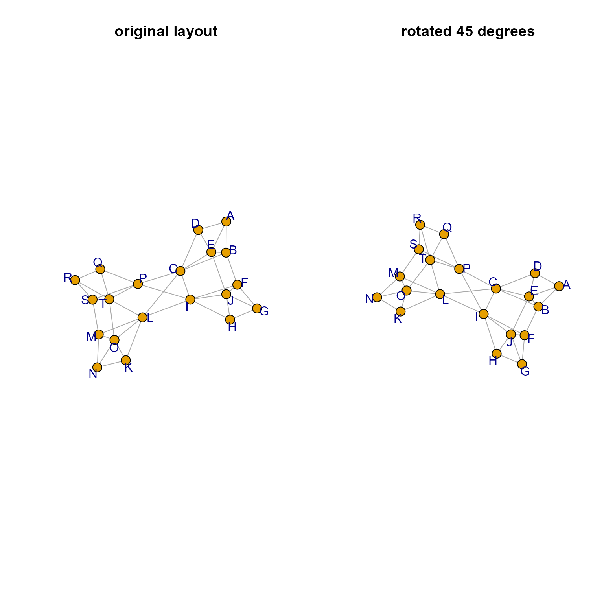
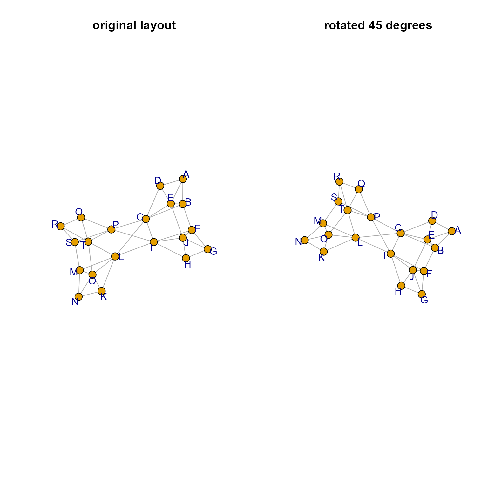

Rotate igraph layout coordinates, optionally after reflecting coordinates along one or more coordinate axes.
Arguments
- g
igraphobject that contains layout coordinates in graph attributes, for exampleigraph::graph_attr(g, "layout").- degrees
numeric value indicating the degrees to rotate layout coordinates, where 360 degrees is one complete rotation.
- reflect
characterstring indicating one or more axes to reflect coordinates, or"none"to reflect no axis.- center
numericcoordinates to use as the center, orcenter=NULLto calculate the center usingcenter_rule.- center_rule
characterstring indicating which rule to apply to determine the center coordinates, whencenter=NULL:"origin"uses c(0, 0);"mean"uses the mean of each axis;"median"uses the median of each axis;"min"uses the minimum of each axis;"max"uses the max of each axis.- rotation_axes
integervector indicating which axis coordinates to rotate, by defaultc(1, 2)uses the first two axes.- spread_labels, do_reorder
logicalindicating whether to callspread_igraph_labels(), and subsequently whether to callreorderIgraphNodes().- layout
matrixwith 2 or more columns, when defined this layout is used and not the layout from thegigraphobject.- ...
additional arguments are passed to
spread_igraph_labels()which callsreorderIgraphNodes()whenspread_labels=TRUEanddo_reorder=TRUE, or toreorderIgraphNodes()whenspread_labels=FALSEanddo_reorder=TRUE. Notably, the optional argumentsortAttributescan be passed through those functions to affect the node sort priority.
Details
This function rotates igraph layout coordinates by calling
the function rotate_coordinates(). The input can either be
g as igraph object, or layout as a numeric matrix.
Note that the reflect is applied before degrees. To change
the order, call this function multiple times.
When both g and layout are supplied, the coordinates are
used from layout, rotated, then stored in the g igraph object
as a graph attribute, using igraph::graph_attr(g, "layout").
When only g is supplied, it is expected to contain
layout coordinates in graph attributes, obtained with
igraph::graph_attr(g, "layout").
When only layout is supplied, and no g igraph object
is supplied, this function serves only as a wrapper to
rotate_coordinates().
Rotation code kindly contributed by Don MacQueen to the maptools
package, and is reproduced here to avoid a dependency on maptools
and therefore the sp package.
This function also calls other useful helper functions,
when spread_labels=TRUE it calls spread_igraph_labels() to
position labels around each node based upon the angle of
incoming edges, which has the effect of reducing label overlaps.
When do_reorder=TRUE it calls reorderIgraphNodes() which
sorts nodes within a nodeset by color then by label, to help
visually group similar nodes together in equivalent positions
in the layout.
See also
Other jam cnet igraph functions:
apply_cnet_direction()
Other jam igraph layouts:
layout_with_qfr(),
layout_with_qfrf(),
relayout_with_qfr(),
removeIgraphSinglets(),
reorderIgraphNodes(),
spread_igraph_labels()
Examples
layout <- cbind(0:10, 0:10);
layout_rot50 <- rotate_igraph_layout(layout=layout, degrees=50);
layout_rot40_ctrmean <- rotate_igraph_layout(layout=layout, degrees=40, center_rule="mean");
plot(rbind(layout, layout_rot50, layout_rot40_ctrmean),
col=rep(c("darkorchid", "darkorange1", "dodgerblue"), each=11),
pch=rep(c(17, 20, 18), each=11),
cex=2);
 if (require(igraph)) {
g <- igraph::make_graph( ~ A-B-C-D-A, E-A:B:C:D,
F-G-H-I-F, J-F:G:H:I,
K-L-M-N-K, O-K:L:M:N,
P-Q-R-S-P, T-P:Q:R:S,
B-F, E-J, C-I, L-T, O-T, M-S,
C-P, C-L, I-L, I-P);
g <- relayout_with_qfr(g, repulse=8);
g2 <- rotate_igraph_layout(g, degrees=45);
opar <- par("mfrow"=c(1,2));
on.exit(par(opar));
jam_igraph(g,
main="original layout",
node_factor=0.6,
label_dist_factor=7);
jam_igraph(g2,
main="rotated 45 degrees",
node_factor=0.6,
label_dist_factor=7);
}

if (require(igraph)) {
g <- igraph::make_graph( ~ A-B-C-D-A, E-A:B:C:D,
F-G-H-I-F, J-F:G:H:I,
K-L-M-N-K, O-K:L:M:N,
P-Q-R-S-P, T-P:Q:R:S,
B-F, E-J, C-I, L-T, O-T, M-S,
C-P, C-L, I-L, I-P);
g <- relayout_with_qfr(g, repulse=8);
g2 <- rotate_igraph_layout(g, degrees=45);
opar <- par("mfrow"=c(1,2));
on.exit(par(opar));
jam_igraph(g,
main="original layout",
node_factor=0.6,
label_dist_factor=7);
jam_igraph(g2,
main="rotated 45 degrees",
node_factor=0.6,
label_dist_factor=7);
}
